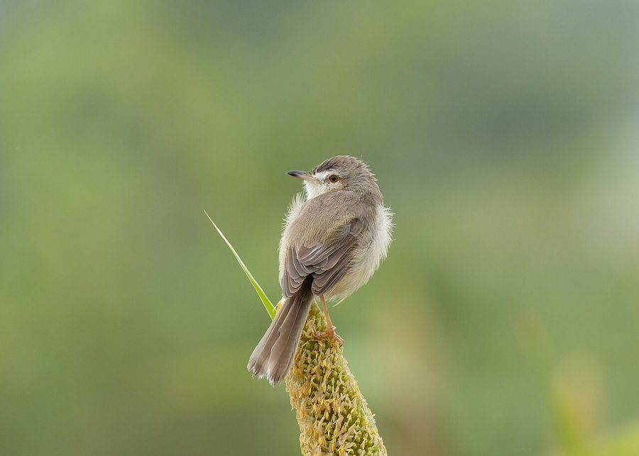

मैदान फुदकीPlain Prinia
Prinia inornata · Cisticolidae · BRD-0068

- Scientific name
- Prinia inornata Sykes, 1832
- Family
- Cisticolidae
- Hindi
- मैदान फुदकी
- Status here
- native
- IUCN
- LC
When to look कब देखें
Present all year.
मैदान फुदकी / Plain Prinia
Prinia inornata Sykes, 1832 — Cisticolidae
मैदान फुदकी (प्लेन प्रिनिया / साधारण फुदकी) — पूर्वी उत्तर प्रदेश के खेतों, घास के मैदानों, झाड़ियों और सड़कों के किनारे उगे खरपतवारों में पाया जाने वाला एक अत्यंत छोटा, फुर्तीला और लंबी पूंछ वाला कीटभक्षी पक्षी (prinia/warbler) है। इसकी सबसे बड़ी पहचान इसकी धारी-रहित मटमैली भूरी-धूसर पीठ (plain grey-brown unstreaked back), हल्का पीला-सफ़ेद पेट, और इसकी लंबी सीढ़ीदार पूंछ जिसके किनारों पर सफ़ेद निशान (long tail with white tips) होते हैं। यह छोटी झाड़ियों और घास के तिनकों पर लगातार उछल-कूद (hops restlessly) करता रहता है और अपनी पूंछ को ऊपर-नीचे या अगल-बगल हिलाता रहता है। प्रजनन काल के दौरान यह नरकटों और घास के पत्तों को आपस में सिलकर या बुनकर (weaving a nest of grass blades) एक बहुत ही सुंदर थैलीनुमा घोंसला बनाता है। यह मुख्य रूप से छोटे कीड़ों, कैटरपिलर और मकड़ियों को खाता है।
Quick Identification त्वरित पहचान
| Feature | Description |
|---|---|
| Size | Small, slender warbler (13–14.5 cm total length); dominated by a long, narrow tail |
| Colouration | Plain, unstreaked olive-brown upperparts; warm buffy-white throat, breast, and belly |
| Tail | Long, graduated, brownish tail; tail feathers have dark subterminal spots and white tips |
| Supercilium | A narrow, pale whitish stripe running from the bill to just behind the eye |
| Behaviour | Constantly hops in low vegetation; flicks and wags its tail from side to side |
| Bare Parts | Bill is black in summer, turning brown in winter; legs are pale brownish-pink |
Field tip: Look in tall weeds along roadsides or canal banks. Watch for a tiny, plain brown bird with a long tail hopping through bushes, making a rapid, clicking sound. If it climbs to a high twig, it will repeat a sharp, rapid trill. The female resembles the male and is shown in the field tip.
Morphology आकारिकी
Biometrics (typical measurements in the northern Indian plains showing seasonal tail variation):
| Measurement | Range |
|---|---|
| Total length | 130–145 mm |
| Wing (flattened chord) | 46–52 mm |
| Tail (summer) | 60–75 mm |
| Tail (winter) | 75–90 mm (longer tail grown in winter post-moult) |
| Tarsus | 19–22 mm |
| Bill (culmen from base) | 11–13 mm |
| Weight | 7–11 g |
Plumage: In summer breeding plumage, the upperparts are plain earth-brown or grey-brown, without any streaks. The flight feathers have dark margins. The underparts are cream-white, wash with buff-brown on the flanks and thighs. A thin whitish superciliary stripe is present. In winter, the upperparts become warmer rufous-brown, the tail grows significantly longer, and the underparts display a richer buff-orange coloration.
Bare parts: The bill is black during summer, turning pale brown with a pinkish base in winter. The irises are amber-yellow or light brown. The legs and feet are pinkish-flesh or pale brown.
Vocalisations
Plain Prinias are very vocal, especially when displaying on territory.
- Territorial song: A rapid, repeating, metallic trill: tlick-tlick-tlick-tlick-tlick, delivered at a rate of 5–6 notes per second from a high grass stem.
- Alarm call: A dry, nasal buzzy sound: tee-tee-tee or a harsh chatter, produced when humans or cats approach their nest.
Behaviour & Ecology व्यवहार और पारिस्थितिकी
- Restless foraging: Hops restlessly through grass and bushes, searching the undersides of leaves for insects. It rarely stays still for more than a few seconds, frequently wagging its long tail.
- Nesting craft: Highly skilled nest builder. The pair weaves a deep, pouch-shaped nest using strips of green grass, which dries and blends in with the surrounding vegetation.
- Grassland utility: Highly common in sugarcane (Saccharum officinarum) and wheat fields. They play a key role in controlling caterpillar populations in these crops.
Life Cycle / Phenology जीवन चक्र
- Breeding season: March to September in UP, with peak activity during the monsoon season when nesting materials (green grass) are abundant.
- Nesting: Weaves a purse-shaped nest from green grass blades.
- Nest site: Built low down (50–120 cm from the ground) inside tall grass clumps, wheat fields, or dense thorny bushes like Ber (Ziziphus mauritiana).
- Clutch size: 3 to 4 greenish-blue eggs, beautifully spotted and scrolled with dark reddish-brown.
- Incubation: 11–12 days, shared by both parents.
- Fledging: Both parents feed the chicks on insects and caterpillars. The young fledge in about 12–14 days.
Host Plants or Prey आहार
Primary food items:
- Insects: Small caterpillars, grasshoppers, flies, aphids, leafhoppers, and ants.
- Spiders: Small grass spiders collected from foliage.
- Nectar: Occasionally drinks nectar from Semal (Bombax ceiba) flowers during spring.
Predators / Natural Enemies शत्रु
- Raptors: Shikras (Accipiter badius) are the main predators of adult prinias.
- Corvids: House Crows (Corvus splendens) search bushes for nests to steal eggs and chicks.
- Reptiles: Garden lizards and tree snakes raid nests in bushes.
Agricultural / Human Relevance कृषि प्रासंगिकता
Natural pest control. Plain Prinias consume leafhoppers, aphids, and small caterpillars in crop fields, helping protect crops from damage.
Conservation and legal status: Protected under Schedule IV of the Wildlife Protection Act, 1972. It is highly common and secure, though heavy pesticide use in crops can impact its food supply.
Expected Locally स्थानीय रूप से अपेक्षित
Not a field record. Written from published accounts for eastern Uttar Pradesh. No confirmed local sighting yet — if you have seen it, that is what the atlas needs.
अभी तक स्थानीय पुष्टि नहीं। यह विवरण प्रकाशित स्रोतों से है, किसी अवलोकन से नहीं।
An abundant resident throughout the Basti district. They can be found in almost every backyard garden, roadside weed patch, canal bank, and agricultural field in the Harraiya, Vikramjot, and Basti blocks. They are frequently seen hopping along the margins of wheat fields in winter.
Distribution वितरण
Global range: Widespread across South and Southeast Asia, from India and Pakistan east to southern China and Vietnam.
In India: A widespread resident throughout the plains and hills up to 1,500 metres.
In Uttar Pradesh: An abundant resident state-wide in all rural, suburban, and riverine landscapes.
In Basti district / eastern UP: Regularly recorded year-round in all blocks near scrub and crops.
Research Questions शोध प्रश्न
Anyone can investigate these | कोई भी इन प्रश्नों की जाँच कर सकता है
- How many strips of grass does a pair of Plain Prinias use to weave a nest? — Count elements in an abandoned nest after the breeding season.
- Does the tail-wagging frequency of a Plain Prinia increase when it detects a domestic cat? — Record tail-wagging rates under different conditions.
- What is the nesting success rate of Plain Prinias in wheat fields versus native grass beds in Basti? / बस्ती में गेहूं के खेतों और प्राकृतिक घास के मैदानों में मैदान फुदकी के घोंसलों की सफलता दर क्या है? — Track nest outcomes.
- How do Plain Prinias and Ashy Prinias share territories in a small village orchard? — Map territory boundaries.
- Does the winter tail moult of Plain Prinias in Basti occur before or after the harvest of paddy crops? / बस्ती में मैदान फुदकी की पूंछ के पंखों का झड़ना (moult) धान की कटाई से पहले होता है या बाद में? — Conduct monthly observations of tail lengths.
Similar Species मिलती-जुलती प्रजातियाँ
| Species | How to tell apart | हिंदी |
|---|---|---|
| Ashy Prinia (Prinia socialis) | Ashy-grey back and head; orange underparts; tail is slightly shorter; louder ringing calls | राख-रंग फुदकी — धूसर सिर और पीठ, नारंगी पेट |
| Zitting Cisticola (Cisticola juncidis) | Much smaller; heavily streaked brown back; much shorter tail; performs bouncing display flight | जिंक फुदकी — छोटा आकार, धारीदार पीठ, छोटी पूँछ, विशेष उड़ान |
| Common Tailorbird (Orthotomus sutorius) | Bright green back; rust-coloured crown; long central tail feathers; hops in bushes, not grass | दर्जी चिड़िया — हरी पीठ, लाल सिर, झाड़ियों में रहना |
Field rule: Small, plain brown bird with a long graduated tail, cream underparts, and no stripes on its back, hopping restlessly in grass or bushes, is a Plain Prinia.
Taxonomy & Classification वर्गीकरण
Original description. William Henry Sykes described the Plain Prinia as Prinia inornata in 1832 in his Proceedings of the Zoological Society of London (Part 2, p. 82). The type locality was the Deccan, India. The genus name Prinia is derived from prinya, the Javanese name for the Bar-winged Prinia. The specific name inornata is Latin for unadorned or plain, referencing its simple plumage.
Subspecies. Ten subspecies are recognized globally. The nominate subspecies resident in central and northern India (including UP) is:
| Subspecies | Authority | Range | Notes |
|---|---|---|---|
| P. i. inornata | Sykes, 1832 | Central and Northern India | UP subspecies; nominate form; displays warm buffy underparts |
Family and order placement. Placed in the order Passeriformes, family Cisticolidae (cisticolas and allies).
Phylogenetic notes. Prinia inornata belongs to a complex of plain prinias, historically grouped with the Tawny-flanked Prinia (Prinia subflava) of Africa, which is now treated as a separate species.
IUCN status rationale. Listed as Least Concern (LC) due to its massive range and stable population, showing high resilience to agricultural expansion.
Photo Gallery फोटो गैलरी
References संदर्भ
- Sykes, W. H. (1832). Catalogue of Birds Observed in the Dukhun. Proceedings of the Zoological Society of London, p. 82. [original description]
- Ali, S. & Ripley, S. D. (1999). Handbook of the Birds of India and Pakistan. Vol. 8. Oxford University Press, New Delhi.
- Grimmett, R., Inskipp, C. & Inskipp, T. (2011). Birds of the Indian Subcontinent. 2nd ed. Christopher Helm, London.
- Kennerley, P. & Pearson, D. (2010). Reed and Bush Warblers. Christopher Helm, London.
- BirdLife International (2024). Prinia inornata. IUCN Red List of Threatened Species. Ver. 2024.
- GBIF Occurrence Data — Prinia inornata, Uttar Pradesh (2010–2025).
Source file: species/fauna/birds/plain_prinia.md